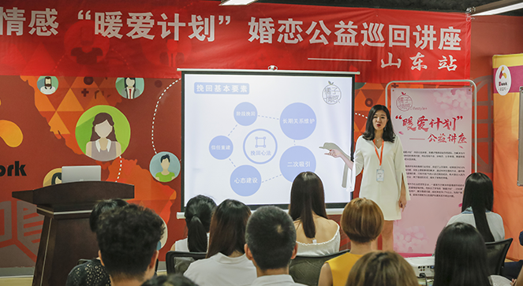

- 返回顶部
- 4006-299-520
- 在线咨询
- 微信公众号

由橘子情感举办的“暖爱计划”婚恋知识巡回公益讲座,在山东站如火如荼地进行着。
“暖爱计划”巡回公益讲座是橘子情感创始导师团队，为解决当今社会普遍存在的情感问题（如性格不合、异地恋、分手率高、离婚率高等）举办的大型公益讲座。现场气氛火爆，吸引了社会各年龄段的男女前来取经。此次讲座由橘子情感团队嘉禾导师、源一导师主讲，各位导师们也为此次讲座做了充分的准备。
此次讲座分析了男女婚恋交往中遇到的问题和对应的解决方法，引起了现场观众的极大共鸣，通过每位听众全神贯注的眼神，体现了他们对于导师所授知识的需求感和认同感。
橘子情感多年来的情感行业经验，总结了上万案例，结果表示92.6%的情感破裂问题，实际上都能够通过科学合理的方法挽回爱情。但遗憾的是，只有不到7%的人自己挽回成功。绝大部分人因为不了解这个行业，用了错误的方式，错失了原有的幸福。橘子情感创想文化传播有限公司的导师们，以专业的视角和多年的从业经验，给予观众们正确的爱情观和情感知识，获得观众的一致好评。
在讲座的后半段，安排了现场观众的提问环节，导师们根据每位提问者不同的情感问题提出建议，对他们的情感起到了实质性的帮助。在最后观众们分享讲座感受的时候，有观众表示：“我曾经享受过婚姻带来的快乐，但最后还是没能留住对方。为了挽留对方，自己看过很多书，但在真正的生活中却不知道该如何运用。听了橘子情感导师们的讲座，感觉之前的体验被梳理了一遍，回去后会好好回味其中的意义。同时也非常期待橘子情感后续的服务，因为觉得他们非常专业，非常信任他们。”
橘子情感作为一支专业的解决婚恋问题的团队，一直致力于解决中国情感市场的空缺，为更多人的爱情保驾护航。而执行了多年的“挽爱计划”，已经累计帮助了数万名用户，解决情感问题。是用户挽回爱情、拯救婚姻、提高恋爱能力以及维护长期关系的坚实的后盾，体现了团队对当今社会的婚姻、恋爱问题的重视。
本次公益讲座的进行，橘子情感获得了“爱心公益，慈善之星”的荣誉称号。橘子情感的负责人表示，希望通过此次公益讲座为社会各界人士树立一个对待情感正确的心态，提供一个解决情感问题的靠谱的有利的渠道，也希望大家都能够通过正确的方法顺利解决自己的感情问题，收获真挚的爱情。
 两性情感咨询师n对1指导了解详情>>
两性情感咨询师n对1指导了解详情>>
{kind=link}